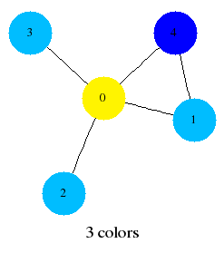

All graphs are simple and undirected. They are represented internally by dynamically allocated adjacency lists.
| graph_t | type of a graph |
| void set_adj_list_initial_size(size_t sz) | set initial size of adjacency lists (defaults to 8) |
| graph_t graph_new(unsigned int n); | return a new empty graph with n nodes labelled 0..n-1 |
| void graph_clear(graph_t g); | destroy a graph |
| void graph_empty(graph_t g); | set to the empty graph |
| void graph_add_edge(graph_t g,node_t i,node_t j); | add undirected edge i-j to the graph |
| void graph_del_edge(graph_t g,node_t i,node_t j); | delete edge i-j from the graph |
| int graph_has_edge(graph_t g,node_t i,node_t j); | 1 if edge i-j is present in g, else 0 |
| void graph_add_node(graph_t g); | add a node to the graph |
| nnodes(g) | number of nodes in g |
| nedges(g) | number of edges in g |
| graph_node_degree(graph_t g, node_t i); | degree of a node |
| int graph_min_degree(graph_t g); | minimum degree of a node in g |
| int graph_max_degree(graph_t g); | maximum degree of a node in g |
| double graph_mean_degree(graph_t g); | return mean degree of the nodes of g |
| void graph_show(graph_t g); | list edges of g to stdout |
| void graph_make_dotfile(graph_t g, char* fn); | write a dotfile suitable for processing by graphviz |
| void graph_make_dotfile_colored(graph_t g, char* fn); | write a colored dotfile suitable for processing by graphviz |
| void graph_to_dimacs(graph_t g, char* fn); | write graph to a file named fn in DIMACS format |
| void graph_to_theta(graph_t g, char* fn); | write graph to a file named fn in a format suitable for reading by Benson's Lovász theta program |
| int graph_nclusters(graph_t g); | the number of clusters (connected components) in g |
| int graph_connected(graph_t g); | 1 if g is connected, else 0 |
| cluster(g,i) | cluster to which node i belongs (valid only after a call to graph_greedy_color or graph_nclusters) |
| int* graph_cluster_sizes(graph_t g) | return a (0-terminated) list of cluster sizes, largest first |
| int graph_max_cluster(graph_t g) | size of largest cluster (graph is connected if this equals nnodes(g)) |
For more than a few graphs, it's better to use the iterators in the next section (especially for GRG).
| void graph_gnp(graph_t g, double p); | generate an instance of the random graph G{n,p} |
| void graph_gnm(graph_t g, int m); | generate an instance of the random graph G(n,m) |
| void graph_grg(graph_t g, double r); | generate an instance of the geometric random graph GRG(n,r). This has n nodes in the unit square, with each pair linked if their separation is less than r |
| void graph_lognormal_grg(graph_t g, double r, double alpha); | nodes a distance d apart are joined with probability (1-erf(log(d/r)/alpha))/2 |
| void graph_grg_torus(graph_t g, double r); | as graph_grg, but in a unit-area torus instead of a square |
| void graph_lognormal_grg_torus(graph_t g, double r, double alpha); | nodes a torus distance d apart are joined with probability (1-erf(log(d/r)/alpha))/2 |
When using these, an indefinitely large sample is generated from the specified ensemble, and f is called for each graph. f should return 0 to terminate the iteration. Arbitrary client data or paremeters may be passed to f through cd.
| graph_gnp_iterator(unsigned int n, double p, int f(graph_t,int,void*), void* cd); | G{n,p} |
| graph_gnm_iterator(unsigned int n, unsigned long m, int f(graph_t,int,void*), void* cd); | G(n,m) |
| int graph_grg_torus_iterator(unsigned int n, double r, int f(graph_t,int,void*), void* cd); | GRG(n,r) |
| int graph_random_line_graph_iterator(unsigned int nlines, int f(graph_t,int,void*), void* cd) | model: place nlines dots uniformly in the unit square; put a line of random slope through each dot; intersections of these lines are the nodes of the graph; line segments between intersections are the edges of the graph |
| int graph_random_line_poisson_graph_iterator(double tau, int f(graph_t,int,void*), void* cd) | as above, but a Poisson number (mean=4*tau/pi) of nodes in the square |
| int graph_clique_number(graph_t g); | compute the exact clique number of g. Warning: this can take a long time for large graphs |
| void graph_local_complement(graph_t g, node_t i); | in-place local_complementation at node i; i.e. subgraph N_i(g) is complemented, where N_i(g) is the set of neighbours of i |
| int graph_greedy_color(graph_t g,int perm[]); | color the nodes of g in the node order given by perm, which must be a permutation of 0..nnodes(g)-1, or NULL, in which case the identity permutation is used. This returns a rapidly computable upper bound to the chromatic number |
| int graph_sequential_color(graph_t g,int perm[],int ub); | color the nodes of g in node order given by perm, aborting as soon as more than ub colors are used (in which case -1 is returned). This returns an upper bound to the chromatic number |
| int graph_sequential_color_repeat(graph_t g, int n); | color g's nodes n times in different random orders, and return the number of colors used in the best coloring found. The larger n is, the tighter the upper bound to the chromatic number is likely to be |
| int graph_chromatic_number(graph_t g,clock_t timeout); | compute the exact vertex chromatic number of g. If the timeout value (in seconds) is not zero and is reached, return -1. Warning: this can take a long time for large graphs |
| int graph_edge_chromatic_number(graph_t g,clock_t timeout); | compute the exact edge chromatic number of g. If the timeout value (in seconds) is not zero and is reached, return -1. Warning: this can take a long time for large graphs |
| color(g,i) | color of node i in g (valid only after calling one of the coloring functions) |
| int graph_ncolors(graph_t g); | number of colors used in a coloring of g |
| int graph_check_coloring(graph_t g); | check that a node coloring is valid |
Some convenience functions for collecting statistics (data restricted to non-negative integer values)...
| histogram_t histogram_new(char* lbl); | make a new histogram labelled lbl |
| void histogram_empty(histogram_t); | reset a histogram to all zeros |
| void histogram_add(histogram_t h, int i); | add datum i to h |
| void histogram_clear(histogram_t h); | destroy h |
| void histogram_show(histogram_t h); | print h to stdout |
| void histogram_write(FILE*,histogram_t h); | write h to file |
| double histogram_mean(histogram_t h); | compute the mean of h |
| int histogram_max(histogram_t h); | maximum value in h |
| double histogram_variance(histogram_t h); | compute the variance of h |
| unsigned int histogram_mode(histogram_t h); | compute the mode of h |
| int histogram_biggest_done(histogram_t h, double eps); | return 1 if the modal value has relative standard error less than eps, else 0 |
| int histogram_mean_done(histogram_t h, double eps); | return 1 if the mean has relative standard error less than eps, else 0 |
| double histogram_quantile(histogram_t h, double q); | compute the qth quantile of h (q=0.5 for the median) |
| histogram_t graph_geng_reader(FILE* f, int op(graph_t), char* lbl); | iterate over graphs in file f (in graph6 or sparse6 format), applying op to each and returning a histogram |
| histogram_t graph_showg_reader(FILE* f, int op(graph_t), char* lbl); | iterate over graphs in file f (in "showg -l0 -e" format), applying op to each and returning a histogram |
#include "vn_graph.h"
int main() {
graph_t g=graph_new(5);
graph_add_edge(g,0,1);
graph_add_edge(g,0,2);
graph_add_edge(g,0,3);
graph_add_edge(g,0,4);
graph_add_edge(g,1,4);
graph_show(g);
printf("chi=%d\n",graph_chromatic_number(g,0));
graph_make_dotfile_colored(g,"example_03.dot");
printf("number of clusters=%d\n",graph_nclusters(g));
graph_add_node(g);
printf("nnodes=%d number of clusters=%d\n",nnodes(g),graph_nclusters(g));
graph_clear(g);
return 0;
}
0: 1 2 3 4 1: 0 4 2: 0 3: 0 4: 0 1 chi=3 example_03.dot written: now do "neato -Tps example_03.dot | gv -" number of clusters=1 nnodes=6 number of clusters=2

The programs vn_graph_omega and vn_graph_chi are provided for computing clique and (vertex) chromatic number of geng output. Also vn_graph_chi_dash computes the edge chromatic number.
Examples:
kbriggs:~/very_nauty-1.1> geng 8 | time ./vn_graph_omega >A geng -d0D7 n=8 e=0-28 >Z 12346 graphs generated in 0.03 sec graph_omega 12346 items; mode=3 average=3.528997 variance=0.4996 stdev=0.7069 stderr=0.006362 1 1 0.000081 0.008% se=nan 2 409 0.033128 3.313% se=0.0104 3 6021 0.487688 48.769% se=0.000793 4 4985 0.403775 40.377% se=0.0012 5 842 0.068200 6.820% se=0.000608 6 80 0.006480 0.648% se=0.000205 7 7 0.000567 0.057% se=6.62e-05 8 1 0.000081 0.008% se=nan 0.15user 0.02system 0:00.25elapsed 67%CPU
kbriggs:~/very_nauty-1.1> genrang -P20/100 50 10000 | time ./vn_graph_chi graph_chi 10000 items; mode=5 average=5.010700 variance=0.01239 stdev=0.1113 stderr=0.001113 4 9 0.000900 0.090% se=0.000298 5 9875 0.987500 98.750% se=1.26e-05 6 116 0.011600 1.160% se=0.000198 11.56user 0.33system 0:13.53elapsed 87%CPU
kbriggs:~/very_nauty-1.1> geng -c -d4 -D4 10 | ./vn_graph_chi >A geng -cd4D4 n=10 e=20 >Z 59 graphs generated in 0.01 sec graph_chi 59 items; mode=4 average=3.491525 variance=0.2887 stdev=0.5373 stderr=0.06995 2 1 0.016949 1.695% se=nan 3 28 0.474576 47.458% se=0.0207 4 30 0.508475 50.847% se=0.0246
kbriggs@europa:~/very_nauty-1.1> geng -c -t 10 | time ./vn_graph_chi_dash >A geng -ctd1D9 n=10 e=9-25 >Z 9832 graphs generated in 0.04 sec graph_chi_dash 9832 items; mode=4 mean=4.440602 var=0.5836 stdev=0.7639 stderr=0.007704 2 2 0.000203 0.020% se=4.48e-05 3 694 0.070586 7.059% se=0.000612 4 4953 0.503763 50.376% se=0.00121 5 3435 0.349369 34.937% se=0.000571 6 659 0.067026 6.703% se=0.00225 7 80 0.008137 0.814% se=0.00719 8 8 0.000814 0.081% se=0.0323 9 1 0.000102 0.010% se=nan 0.14user 0.00system 0:00.26elapsed 55%CPU